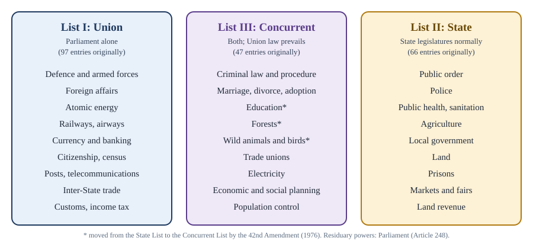

Chapter 8: Federalism and Centre-State Relations¶
How power is shared between the Union and the States: laws, administration and money
Learning outcomes
When you have finished this chapter you should be able to:
- define federalism and list the federal and unitary features of the Constitution;
- explain the common descriptions of Indian federalism (quasi-federal, co-operative, "holding together");
- explain the distribution of legislative power through the Seventh Schedule, the residuary power and the rule of repugnancy;
- list the situations in which Parliament can legislate on State subjects;
- describe the administrative relations between the Union and the States, including All-India Services;
- explain how taxes are divided and shared, the role of the Finance Commission, and the Goods and Services Tax Council;
- describe the machinery for inter-State co-operation and the main recommendations for reform.
8.1 What federalism means¶
Federalism is a system of government in which power is divided between a central government and regional governments, each with its own sphere of authority guaranteed by a written constitution. Neither level can abolish the other or take away its powers unilaterally. A unitary system, by contrast, concentrates power in the central government; regional bodies exist only as it chooses and exercise only the powers it delegates.
The classic federations, such as the United States, Switzerland and Australia, share certain features: a written and supreme constitution, a division of powers between two levels of government, a rigid procedure of amendment for the provisions that divide power, an independent judiciary to settle disputes between the levels, and usually a second chamber representing the units.
India has all these features, and also a number of features that strengthen the Centre.
| Federal features | Unitary (or centralising) features |
|---|---|
| Two levels of government: Union and States (and a third, local, tier) | A strong Centre with more and weightier subjects |
| Written Constitution, supreme over all governments | A single Constitution for the Union and the States (with limited exceptions in the past) |
| Division of powers in three lists (Seventh Schedule) | Residuary powers with the Union (Article 248) |
| Rigid amendment for federal provisions: ratification by half the States | Most of the Constitution can be amended by Parliament alone |
| Independent judiciary to decide Centre-State disputes (Article 131) | Parliament can change State boundaries and names by ordinary law (Article 3) |
| Bicameral Parliament with a Council of States | States are represented in the Rajya Sabha by population, not equally |
| Single citizenship | |
| Integrated judiciary; All-India Services; a single Election Commission and CAG | |
| Governors appointed by the President | |
| Emergency provisions that can make the system unitary | |
| Parliament can legislate on State subjects in several situations |
Table 8.1. Federal and unitary features of the Constitution.
8.2 How to describe Indian federalism¶
Because of this mixture, scholars have described Indian federalism in different ways. The constitutional scholar K. C. Wheare called the Constitution quasi-federal: a unitary State with subsidiary federal features rather than a federal State with subsidiary unitary features. Others have preferred the phrase co-operative federalism, in which the two levels are interdependent and work together rather than in watertight compartments; the historian Granville Austin used this description. Political scientists also distinguish federations formed by independent units "coming together" (like the United States) from federations formed by a large unit "holding together" its regions by devolving power, and India is a clear example of the second kind.
Dr Ambedkar explained the design in the Constituent Assembly. The Constitution, he said, was federal in that it established a dual polity, but it could be both unitary and federal according to the requirements of time and circumstance: federal in normal times and unitary in times of war or emergency.
The Supreme Court has held that federalism is part of the basic structure (S. R. Bommai, 1994), and has described the Constitution as federal with a strong Centre. Since 1950, practice has moved in both directions: centralisation during periods of one-party dominance and emergency, and a stronger voice for the States in periods of coalition government and through institutions such as the GST Council.
Key idea
India is a federation with a strong Centre. The division of powers is real and protected by the courts, and federalism is part of the basic structure; but the Constitution deliberately gives the Union powers to hold the country together, especially in emergencies.
8.3 Legislative relations¶
Part XI, Chapter I (Articles 245 to 255) governs the distribution of legislative power.
Territorial extent (Article 245)¶
Parliament may make laws for the whole or any part of the territory of India, and its laws may have extra-territorial operation (they may apply to Indian citizens and property abroad). A State legislature may make laws for the whole or any part of its State, but not beyond it.
Subject-matter: the Seventh Schedule (Article 246)¶
The subjects of legislation are divided among three lists in the Seventh Schedule, shown in Figure 8.1.
- List I, the Union List, on which Parliament has exclusive power. It contains subjects of national importance and those that need uniform law, such as defence, foreign affairs, currency, banking, railways and income tax. It had 97 entries originally.
- List II, the State List, on which the State legislatures have power in normal circumstances. It contains subjects of local importance, such as public order, police, public health, agriculture, land and local government. It had 66 entries originally.
- List III, the Concurrent List, on which both Parliament and the State legislatures may legislate. It contains subjects on which uniformity is desirable but not essential, such as criminal law, marriage and divorce, education, forests and trade unions. It had 47 entries originally.
Amendments have since moved and deleted entries, so the present numbers differ a little from the original. The most important transfer was made by the 42nd Amendment (1976), which moved five subjects from the State List to the Concurrent List: education, forests, weights and measures, protection of wild animals and birds, and the administration of justice (the constitution and organisation of all courts except the Supreme Court and the High Courts).

Residuary power (Article 248)¶
Any subject not mentioned in any of the three lists falls within the residuary power, which belongs to Parliament, including the power to impose taxes not mentioned in the lists. This follows the Canadian model; in the United States and Australia, by contrast, residuary powers lie with the states. Whether a matter falls within the residuary power is decided by the courts.
Interpreting the lists: pith and substance¶
Laws rarely fit neatly into one entry. A State law on prohibition of liquor, for example, may affect imports, a Union subject. The courts resolve such cases with the doctrine of pith and substance: they look at the true nature and character of the law, and if it is in substance on a subject within the legislature's competence, it is valid even if it incidentally touches a subject in another list.
Worked example 8.1: Pith and substance
Situation. A State enacts a law prohibiting the possession, sale and consumption of liquor in the State. A trader argues that the law is invalid because it prevents him from selling liquor he has lawfully imported, and imports are a Union subject.
Answer. In substance, the law deals with intoxicating liquors and public health, which are State subjects. Its effect on imports is incidental. Applying the doctrine of pith and substance, the law is within the State's competence. This was essentially the reasoning of the Supreme Court in State of Bombay v. F. N. Balsara (1951), which upheld most of the Bombay Prohibition Act, 1949.
Inconsistency on Concurrent subjects (Article 254)¶
If a State law on a Concurrent subject is repugnant to (in conflict with) a Union law on the same subject, the Union law prevails and the State law is void to the extent of the repugnancy (Article 254(1)). There is one exception: if the State law has been reserved for the consideration of the President and has received his or her assent, it prevails in that State (Article 254(2)). Even then, Parliament may later make a law on the same matter that adds to, amends, varies or repeals the State law.
Worked example 8.2: A clash on a Concurrent subject
Situation. Parliament has enacted a law on a matter of criminal procedure (Concurrent List). State S passes a law that sets a different rule for the same matter. (a) What is the position if the State law was not reserved for the President? (b) What if it was reserved and received the President's assent? (c) What if, after (b), Parliament amends its own law to restore its rule for the whole country?
Answer. (a) The Union law prevails; the State law is void to the extent of the repugnancy (Article 254(1)). (b) The State law prevails within State S (Article 254(2)). (c) Parliament's later law prevails, because the proviso to Article 254(2) allows Parliament to amend or repeal the State law by a subsequent law on the same matter.
When Parliament can legislate on State subjects¶
Normally Parliament cannot make laws on the State List. The Constitution allows it in five situations.
| Situation | Article | Conditions |
|---|---|---|
| National interest | 249 | Rajya Sabha resolution by two-thirds of members present and voting; valid for one year at a time |
| National emergency | 250 | While a proclamation under Article 352 is in operation; the law ceases six months after the emergency ends |
| Request by States | 252 | Two or more State legislatures pass resolutions requesting it; the law applies to those States and others that adopt it later; only Parliament can then amend or repeal it |
| International agreements | 253 | To implement any treaty, agreement or convention, or a decision of an international body |
| President's rule | 356 | While a State is under President's rule, Parliament (or the President, if Parliament delegates) makes laws for it |
Table 8.2. Parliament's power to legislate on State subjects.
Examples of laws under Article 252 include the Water (Prevention and Control of Pollution) Act, 1974. Laws implementing international conventions under Article 253 include the Environment (Protection) Act, 1986, made after the Stockholm conference on the human environment.
Control over State legislation¶
The Union also has some control over State legislation itself. The Governor may reserve certain State bills for the consideration of the President (Article 200), who has an absolute veto over them (Article 201). Bills restricting freedom of trade within the State need the President's prior sanction before introduction (Article 304(b)). And during a financial emergency, the President may direct that money bills of the States be reserved for his or her consideration.
8.4 Administrative relations¶
Part XI, Chapter II (Articles 256 to 263) governs administrative relations.
- Article 256. The executive power of every State must be exercised so as to ensure compliance with laws made by Parliament, and the Union may give such directions to a State as appear necessary for this purpose.
- Article 257. The executive power of a State must not impede or prejudice the exercise of the executive power of the Union. The Union may give directions on the construction and maintenance of means of communication of national or military importance and on the protection of railways within a State.
- Article 258. The President may, with the consent of a State government, entrust Union functions to it; and Parliament may confer powers and impose duties on States in Union matters. Article 258A allows the reverse: a State may, with the Union's consent, entrust its functions to the Union.
- Article 365. If a State fails to comply with directions given by the Union, the President may hold that a situation has arisen in which the government of the State cannot be carried on in accordance with the Constitution, which can lead to President's rule under Article 356.
All-India Services¶
All-India Services are services common to the Union and the States, whose members are recruited and trained by the Union but serve in the States. The Indian Administrative Service and the Indian Police Service existed at the commencement and are recognised in Article 312(2); the Indian Forest Service was created in 1966. Under Article 312, Parliament may create new All-India Services if the Rajya Sabha passes a resolution supported by two-thirds of the members present and voting. Members of these services hold the key positions in State administration, while ultimate control over them rests with the Union. Dr Ambedkar defended them in the Constituent Assembly as a way of maintaining common standards of administration across the country.
Other integrating institutions¶
Several other institutions work across the Union and the States: the integrated judiciary, the Election Commission, the Comptroller and Auditor-General, and the Governors. Each is discussed in its own chapter.
8.5 Financial relations¶
Money is where federal relations are most keenly felt. The basic problem is that the States have large responsibilities (police, health, agriculture, education, local services) but limited sources of revenue, while the Union has the most productive taxes. This mismatch, called vertical fiscal imbalance, is corrected by sharing taxes and giving grants. There is also horizontal imbalance among States, which differ greatly in income and needs.
Taxing powers¶
The power to levy taxes is distributed through the lists. Broadly:
- the Union levies customs duties, corporation tax, taxes on income other than agricultural income, and certain excise duties, as well as the Central and Integrated Goods and Services Taxes;
- the States levy land revenue, taxes on agricultural income, taxes on lands and buildings, State excise on alcoholic liquor for human consumption, taxes on the sale of certain petroleum products, taxes on vehicles, stamp duties (on most documents) and the State Goods and Services Tax;
- local bodies levy taxes such as property tax, under State law. Professions tax may be levied by States or local bodies up to a ceiling fixed in Article 276.
Sharing Union taxes¶
Since the 80th Amendment (2000), all taxes levied by the Union are shared with the States through a divisible pool, except cesses and surcharges and a few taxes that are assigned wholly to the States. The share of the States, and its division among them, are fixed on the recommendation of the Finance Commission (Article 270).
The Finance Commission¶
Under Article 280, the President constitutes a Finance Commission every five years (or earlier), consisting of a chairman and four other members. Its main duty is to recommend:
- the distribution of the net proceeds of shareable taxes between the Union and the States (vertical devolution) and the allocation of the States' share among the States (horizontal devolution);
- the principles governing grants-in-aid to the States out of the Consolidated Fund of India (Article 275);
- measures to augment the resources of States to supplement the resources of panchayats and municipalities.
Its recommendations are advisory, but by convention they have generally been accepted. The Fifteenth Finance Commission recommended that the States receive 41 per cent of the divisible pool for the period 2021–26. The Sixteenth Finance Commission's recommendations cover 2026–31; check its report for the current figures.
Worked example 8.3: Vertical and horizontal devolution
Situation. Suppose the divisible pool of Union taxes in a year is ₹20 lakh crore, and the Finance Commission recommends a States' share of 41 per cent. It recommends that the States' share be divided using two criteria: 60 per cent weight to population and 40 per cent weight to "income distance" (how far a State's per capita income is below that of the richest State). State M has 8 per cent of the population of all States and a 12 per cent share by income distance. How much does State M receive?
Answer. Vertical devolution: \(0.41 \times 20 = 8.2\) lakh crore for all States. State M's combined share: \(0.6 \times 8\% + 0.4 \times 12\% = 4.8\% + 4.8\% = 9.6\%\). State M receives \(0.096 \times 8.2 \approx 0.79\) lakh crore, about ₹78,700 crore. (The numbers here are invented to show the method; real Finance Commissions use several criteria, such as population, area, forest cover, income distance and demographic performance, with their own weights.)
Grants¶
The Union gives two kinds of grants to the States.
- Statutory grants (Article 275): charged on the Consolidated Fund of India, given to States in need of assistance on the recommendation of the Finance Commission. Article 275 also provides grants for the welfare of Scheduled Tribes and the development of Scheduled Areas.
- Discretionary grants (Article 282): the Union and the States may make grants for any public purpose, even outside their own legislative fields. A large part of Union transfers to States for centrally sponsored schemes has been made in this way.
Borrowing¶
The Union may borrow on the security of the Consolidated Fund of India within limits fixed by Parliament (Article 292). A State may borrow within India (not abroad) within limits fixed by its legislature, but if it still owes money to the Union, it needs the Union's consent to raise new loans (Article 293).
The Goods and Services Tax¶
The 101st Amendment (2016) introduced the Goods and Services Tax (GST), which came into force on 1 July 2017 and replaced a large number of Union and State indirect taxes, such as central excise on most goods, service tax, State value-added tax and entry tax. It is a dual tax: on supplies within a State, the Union levies the Central GST and the State levies the State GST; on supplies between States, the Union levies the Integrated GST, which is shared between the Union and the destination State.
- Article 246A gives Parliament and the State legislatures simultaneous power to make laws on GST, with Parliament alone legislating on inter-State supplies.
- Article 279A creates the GST Council: the Union Finance Minister (chairperson), the Union Minister of State in charge of revenue or finance, and the finance or taxation minister of each State. It recommends the taxes to be subsumed, the rates, exemptions and other matters.
- Decisions of the Council need a three-fourths majority of the weighted votes of members present and voting, with the Union's vote carrying one-third of the total weight and the votes of all the States together carrying two-thirds. Neither side can therefore carry a decision alone.
- Some products are outside GST for now: alcoholic liquor for human consumption is excluded by the Constitution, and five petroleum products (crude, petrol, diesel, natural gas and aviation turbine fuel) will come under GST only from a date the Council recommends.
- States were guaranteed compensation for loss of revenue for five years from the introduction of GST.
In Union of India v. Mohit Minerals (2022), the Supreme Court observed that the GST Council's recommendations have persuasive value rather than binding force, since Parliament and the States have simultaneous power under Article 246A. The Council is often cited as an example of co-operative federalism.
Common confusion
The Finance Commission decides how the divisible pool of Union taxes is shared and recommends grants; it is constituted every five years under Article 280. The GST Council recommends GST rates and rules; it is a permanent body under Article 279A in which the Union and the States vote together. They are different bodies with different functions.
8.6 Inter-State relations¶
A federation needs rules not only between the Centre and the States, but among the States themselves.
- Inter-State water disputes (Article 262). Parliament may provide for the adjudication of disputes about the waters of inter-State rivers and may exclude the jurisdiction of all courts, including the Supreme Court. The Inter-State River Water Disputes Act, 1956 provides for tribunals, which have been set up for rivers such as the Krishna, the Godavari, the Narmada and the Cauvery.
- Inter-State Council (Article 263). The President may establish a council to inquire into and advise on disputes between States and to discuss subjects of common interest. An Inter-State Council was set up in 1990 on the recommendation of the Sarkaria Commission. It is chaired by the Prime Minister and includes the Chief Ministers of all States and of Union Territories with legislatures, administrators of other Union Territories, and several Union ministers.
- Full faith and credit (Article 261). Public acts, records and judicial proceedings of the Union and of every State must be given full faith and credit throughout India.
- Freedom of trade, commerce and intercourse (Articles 301 to 307). Trade throughout India is to be free, subject to reasonable restrictions in the public interest imposed by law.
- Zonal Councils. Five Zonal Councils (Northern, Central, Eastern, Western and Southern) were set up by the States Reorganisation Act, 1956, to encourage co-operation among neighbouring States. They are statutory, not constitutional, and are chaired by the Union Home Minister. A North Eastern Council was created by a separate law in 1971.
8.7 Tensions and proposals for reform¶
Centre-State relations have been a recurring subject of debate. The States have raised concerns about the role of Governors, the use of Article 356, the centralisation of financial resources, the growth of centrally sponsored schemes, and Union laws on subjects of State interest. The Union has stressed the need for national unity, security and uniform standards.
Several commissions have examined these questions.
| Commission | Year set up | Main points |
|---|---|---|
| Administrative Reforms Commission | 1966 | Recommended an Inter-State Council and Governors with experience of public life who are non-partisan |
| Rajamannar Committee (appointed by Tamil Nadu) | 1969 | Argued for greater State autonomy, the abolition of some unitary features and a stronger financial position for States |
| Sarkaria Commission | 1983 (report 1988) | Recommended a permanent Inter-State Council; Governors to be eminent persons from outside the State and not closely connected with politics; Article 356 to be used sparingly, as a last resort, after warning the State; consultation with States on Concurrent subjects |
| Punchhi Commission | 2007 (report 2010) | Recommended fixed terms for Governors and removal only by a resolution of the State legislature; localised emergency provisions; fuller use of the Inter-State Council |
Table 8.3. Commissions on Centre-State relations.
Two developments of recent decades deserve mention. First, the Planning Commission, an advisory body created by an executive resolution in 1950 which had great influence over State plans and grants, was replaced on 1 January 2015 by NITI Aayog, whose Governing Council includes the Chief Ministers of all States; it is meant to work as a think tank promoting co-operative federalism. Second, the larger share of taxes devolved to the States since the Fourteenth Finance Commission, together with the GST Council, has given the States a bigger and more formal role in fiscal decisions, although the States have also lost much of their independent power to tax goods and services. The phrase competitive federalism is sometimes used for the idea that States should compete to attract investment and improve governance.
Summary
- India is a federation with a strong Centre: it has the main federal features, together with unitary features such as residuary powers with the Union, single citizenship, an integrated judiciary, All-India Services, Governors appointed by the Centre and emergency powers. Federalism is part of the basic structure.
- Legislative power is divided by the Union, State and Concurrent Lists (Article 246, Seventh Schedule); residuary power lies with Parliament (Article 248); on Concurrent subjects the Union law prevails unless a State law has received the President's assent (Article 254).
- Parliament can legislate on State subjects in the national interest (249), during a national emergency (250), at the request of States (252), to implement treaties (253) and under President's rule (356).
- States must comply with Union laws and directions (256, 257); failure can lead to Article 365 and Article 356. All-India Services and other institutions integrate the administration.
- Union taxes are shared through a divisible pool on the recommendation of the Finance Commission (Article 280), which also recommends grants under Article 275; GST, introduced in 2017, is a dual tax overseen by the GST Council (Article 279A), where the Union has one-third and the States two-thirds of the voting weight.
- Inter-State co-operation is supported by water dispute tribunals (262), the Inter-State Council (263) and Zonal Councils; the Sarkaria and Punchhi Commissions have recommended reforms.
8.8 Exercises¶
Exercise 1
To whom do residuary powers belong in India, under which article, and how does this differ from the United States?
Answer
To Parliament, under Article 248 (and entry 97 of the Union List). In the United States residuary powers belong to the states. India followed the Canadian model.
Exercise 2
Name the five subjects moved from the State List to the Concurrent List by the 42nd Amendment.
Answer
Education; forests; weights and measures; protection of wild animals and birds; administration of justice (the constitution and organisation of all courts except the Supreme Court and the High Courts).
Exercise 3
Explain the rule of repugnancy under Article 254 and the exception to it.
Answer
If a State law on a Concurrent List subject conflicts with a Union law on the same subject, the Union law prevails and the State law is void to the extent of the conflict. The exception: if the State law was reserved for the President's consideration and received assent, it prevails in that State; but Parliament may later make a law adding to, amending, varying or repealing it.
Exercise 4
How do Article 249 and Article 252 differ as routes for Parliament to legislate on State subjects?
Answer
Under Article 249, the initiative comes from the Rajya Sabha, which passes a resolution by two-thirds of the members present and voting declaring it necessary in the national interest; the law can apply throughout India and the resolution lasts one year at a time. Under Article 252, the initiative comes from two or more State legislatures, which pass resolutions requesting Parliament to legislate; the law applies only to those States (and others that adopt it), and only Parliament can amend or repeal it.
Exercise 5
In the GST Council, the Union has one-third of the voting weight and the States together have two-thirds. Decisions need three-fourths of the weighted votes. Show that neither the Union alone nor all the States alone can pass a decision.
Answer
Three-fourths is 75 per cent. The Union alone has about 33.3 per cent, which is short of 75 per cent. All the States together have about 66.7 per cent, which is also short of 75 per cent. Any decision therefore needs the Union and a substantial number of States to agree.
Exercise 6
Name two recommendations of the Sarkaria Commission.
Answer
Any two of: setting up a permanent Inter-State Council under Article 263; appointing as Governors eminent persons from outside the State who are not closely connected with active politics; using Article 356 sparingly, as a last resort, after warning the State; consulting the States on legislation in the Concurrent List.
8.9 Quiz¶
Check yourself: federalism
Exercise 1
In which Schedule are the Union, State and Concurrent Lists?
- Fifth
- Sixth
- Seventh
- Eleventh
Answer
Seventh
Exercise 2
Which of these is a State List subject?
- Defence
- Banking
- Police
- Criminal procedure
Answer
Police
Exercise 3
Under which article is the Finance Commission constituted?
- Article 263
- Article 275
- Article 279A
- Article 280
Answer
Article 280
Exercise 4
Which amendment introduced the Goods and Services Tax?
- 80th
- 99th
- 101st
- 103rd
Answer
101st
Exercise 5
Which doctrine do courts use to decide the true nature of a law that touches subjects in more than one list?
Answer
pith and substance
Exercise 6
Who chairs the Inter-State Council?
- The President
- The Prime Minister
- The Union Home Minister
- The Chief Justice
Answer
The Prime Minister
Exercise 7
Match each article with its subject.
| A | B |
|---|---|
| Article 248 | Inter-State water disputes |
| Article 254 | All-India Services |
| Article 262 | Residuary powers |
| Article 312 | Repugnancy |
Answer
Article 248 — Residuary powers; Article 254 — Repugnancy; Article 262 — Inter-State water disputes; Article 312 — All-India Services